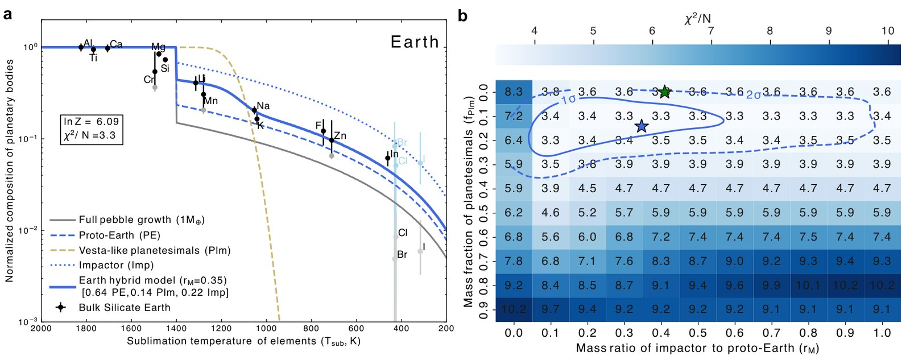

Volatile depletion in rocky planets as a chemical fingerprint of hybrid accretion
Nature Astronomy · DOI · arXiv
Bayesian modelling of devolatilization during pebble accretion and collisional growth shows that the bulk silicate Earth needs a contribution of at least about 75% from two pebble-grown protoplanets, whereas bulk silicate Mars reflects 27 ± 5% pebble-accreted material and 73 ± 5% Vesta-like planetesimals.